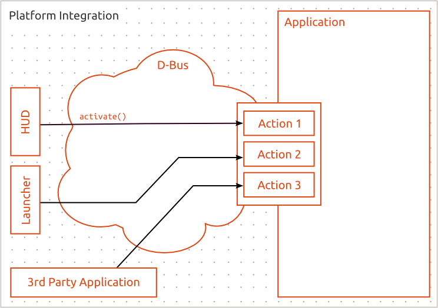

Platform Integration
Unity Action API offers a way for application to integrate with the platform components such as the Unity Launcher and the Unity HUD. The ActionManager exports the actions to D-Bus which allows external components and even 3rd party applications to interact with the actions.

Platform Integration through D-Bus.
One of the key benefits of Unity Action API is that it allows seamless integration with the Unity HUD; All Unity Actions are available to the HUD once they have been added to the ActionManager.

The HUD showing some actions.